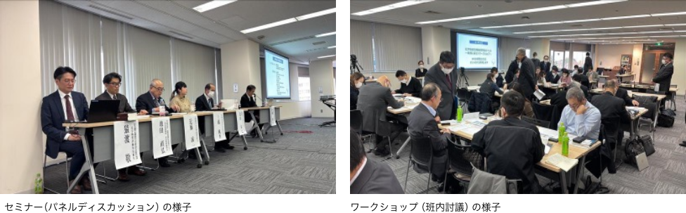
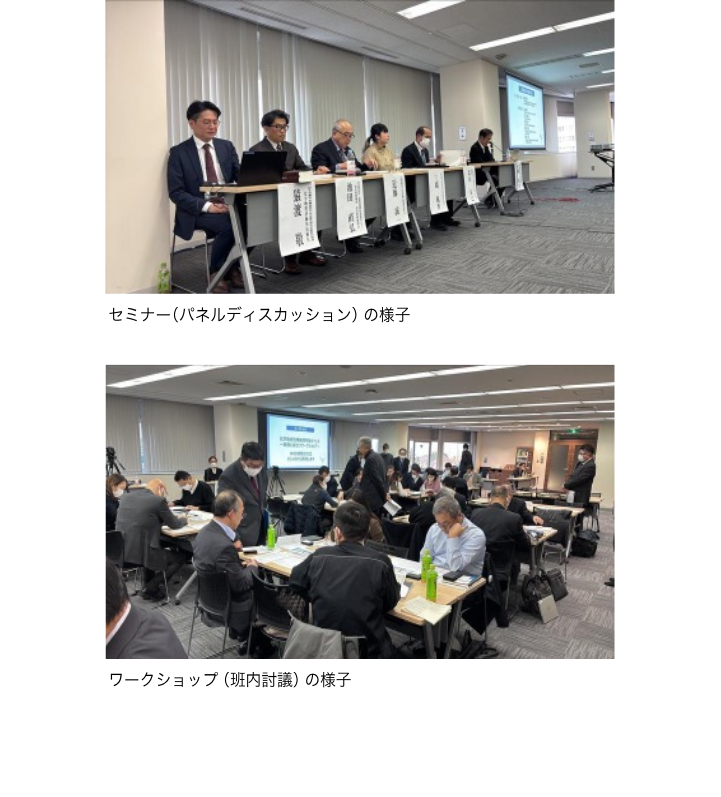

「化学物質の自律的管理～ビルメンテナンス・清掃業界、外食業界及びホテル・旅館業等第三次産業における洗剤等による事故の防止に向けて～」（セミナー・ワークショップ）を開催しました！


厚生労働省は令和７年２月７日（金）、20日（木）に、化学物質管理強調月間の一環として、洗浄剤を扱う第三次産業の方向けのセミナー・ワークショップを、東京（AP市ヶ谷）、大阪（AP大阪淀屋橋）で開催しました。
第1部のセミナーでは、前半に労働安全衛生総合研究所の伊藤昭好先生より、洗浄剤を例として、自律的な管理の進め方について基調講演をしていただきました。
後半は第三次産業の業界や洗浄剤メーカーの方々を交え、業界ごとの洗浄剤の取扱いに関する課題や、化学物質の管理方法や取扱事例について、パネルディスカッションを行い、事前にいただいた質問を中心に質疑応答を行いました。
第2部のワークショップでは、業界別の小グループに分かれ、業務で用いることの多い塩素系洗浄剤を用いて、SDSの確認、リスクの見積り、リスク低減措置の検討、作業者へのリスクの内容やリスク低減措置の周知方法について、班内討議をしていただきました。
ワークショップのアンケートでは、「他社の方と話すことができて認識を新たにしました」、「様々な視点での意見を聞けて勉強になりました」等の声が聞かれ、会場参加者の95%から「今後同様のワークショップがあった場合に同僚や知人に勧めたい」と回答がありました。
引き続き、これまで化学物質管理になじみのなかった事業者に対して、危険・有害な化学物質の適正な管理の重要性に関する意識の高揚を図るとともに、化学物質管理活動の定着を図ることができるよう、周知・啓発に努めてまいります。
【連絡先】厚生労働省労働基準局安全衛生部化学物質対策課
電話：03-5253-1111（内線5618、5512）